Timur Newsletter
A newsletter on Indonesian and Southeast Asian consumer tech companies. One sharp mechanism, one hard number, one decision you can act on; every issue.
Issues are hosted on LinkedIn, which may ask you to sign in.
SEA Subsidy Wars 2018–2022
Series 1 · 12 parts · complete
Part 1The Rise and Fall of Burn Rate
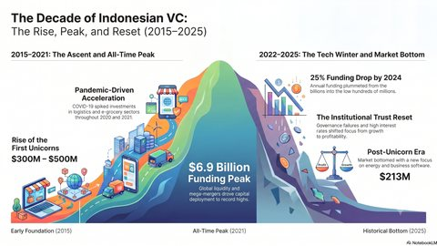
$36 billion burned across Southeast Asian platforms in four years. Nobody could stop unilaterally, and nobody ran a control group. Part 2When the discount stops, who actually leaves and why?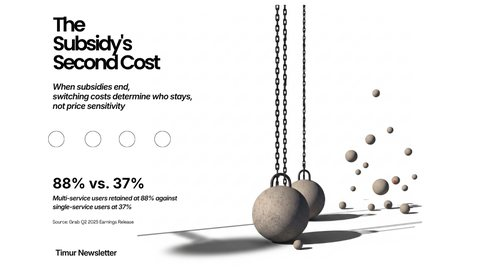
Price elasticity is the wrong mechanism. Users judge the new price against the subsidised one they were trained on. Part 3Switching cost, not subsidies, determined the outcome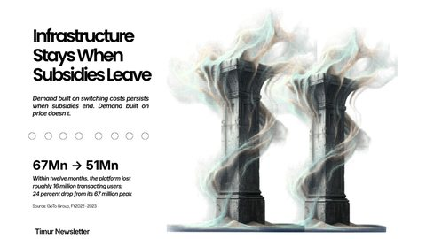
Infrastructure subsidies outlast product subsidies, because only one of them changes what it costs to leave. Part 4GoFood lost 8 points; GrabFood lost 2. Why does that matter?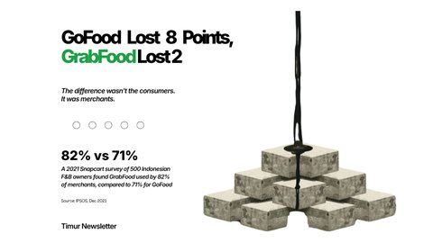
Merchant density is a moat. Consumer discounts are not — and the gap shows up the moment spending stops. Part 5Trapped seller: from 0% to 10% commission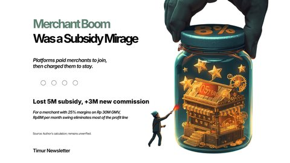
The subsidy’s sign flips. Merchants who joined to be paid stay to pay fees, because leaving now costs more than the fee. Part 6Driver supply stayed, when wages were cut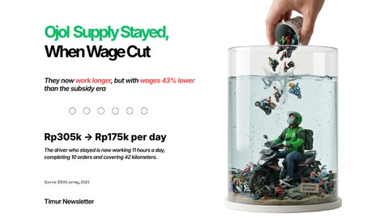
Supply held after pay fell, which looks like resilience and is really adverse selection. The welfare cost went uncounted. Part 7When the cash cow dies, the conglomerate model breaks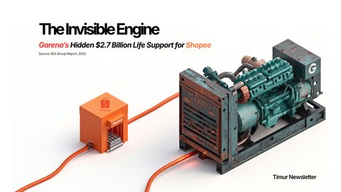
Garena funded Shopee. That cross-subsidy, not strategy, explains who could burn longest and who had to stop. Part 8Lazada: the cost of not playing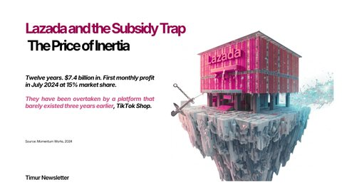
The counterfactual nobody volunteered to run. Sitting out the subsidy war turned out to have its own price. Part 9Indonesia’s TikTok ban strengthened Shopee, not Tokopedia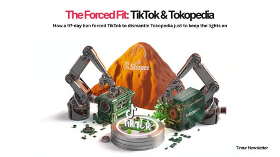
The cleanest natural experiment of the period. Regulation moved market share in a way capital never managed to. Part 10Income distribution and true market size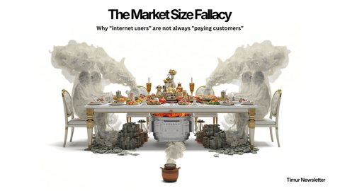
Indonesia’s platform market is capped by income, not awareness. The addressable base is far smaller than the population. Part 11Who can restart the subsidy wars, and when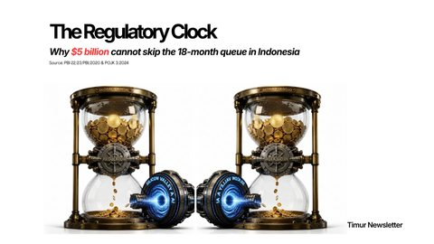
The conditions under which burning cash becomes rational again — and the short list of players who could meet them. Part 12After the burn: how the survivors actually make money now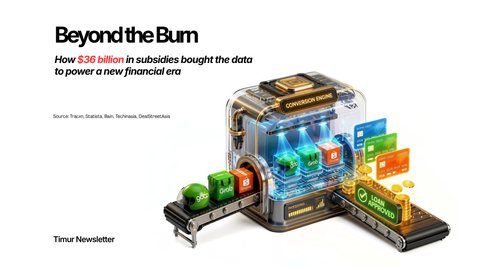
Where the margin came from once the discounts stopped, and which side of the marketplace ended up paying for it.The Great Extraction
Series 2 · 7 parts · in progressHow the survivors now make money — and which side of the marketplace pays for it. Parts appear here as they publish.